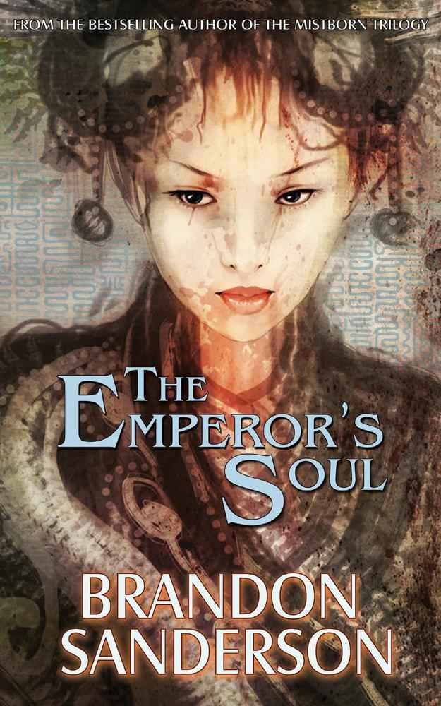

"The Emperor's Soul"
- Read on 2012-11-18
- Rating: ️️️️️
- Format: 📖 (192 pages)
This is a perfect example of Brandon Sanderson's work - just condensed into a (relatively tiny) book of 176 pages. For the amount of story he attempted to tell in that space, I really liked it. It obviously has the potential to be much more than this.
Shai, a recent caught criminal, guilty of theft and destruction of property, is considered a blasphemer as she works in an art of understanding & modifying the nature of things. When the Emperor is nearly killed, his brain damage is such that Shai is asked to rebuild his soul, in exchange for her freedom. With doom constantly circling her, can she complete the task, and save her own neck in time?